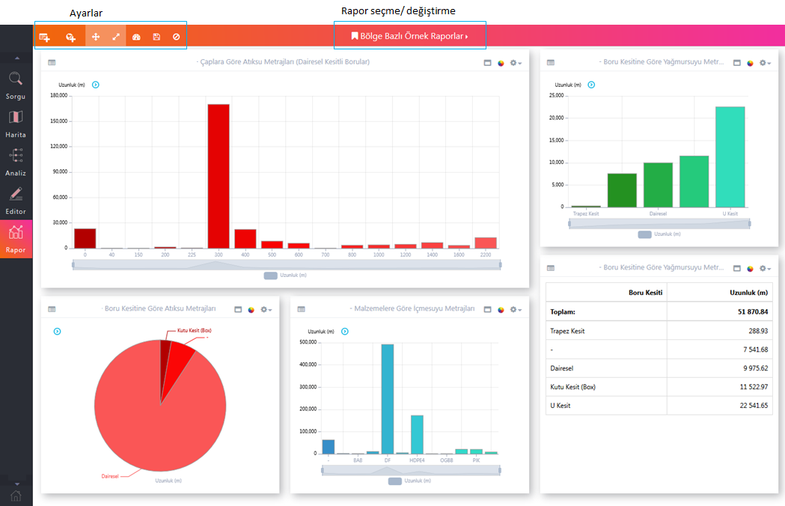
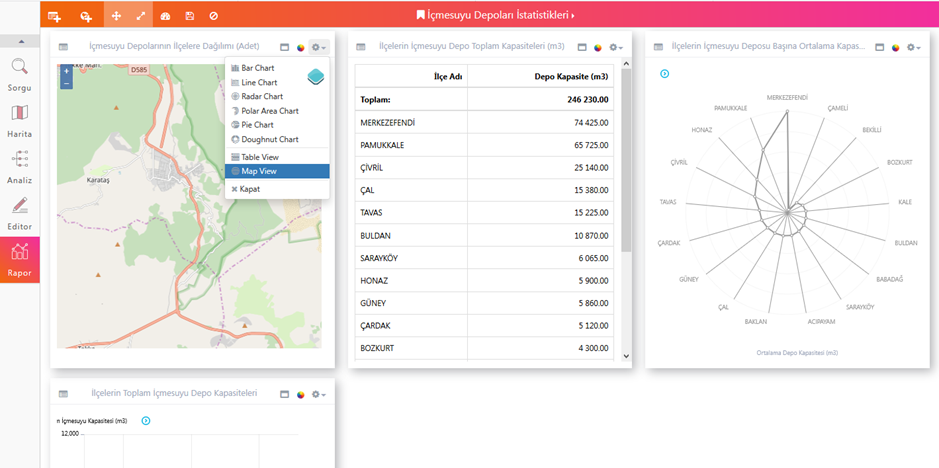
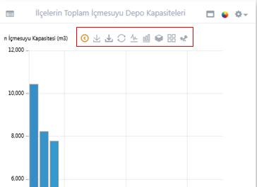
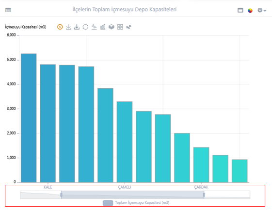
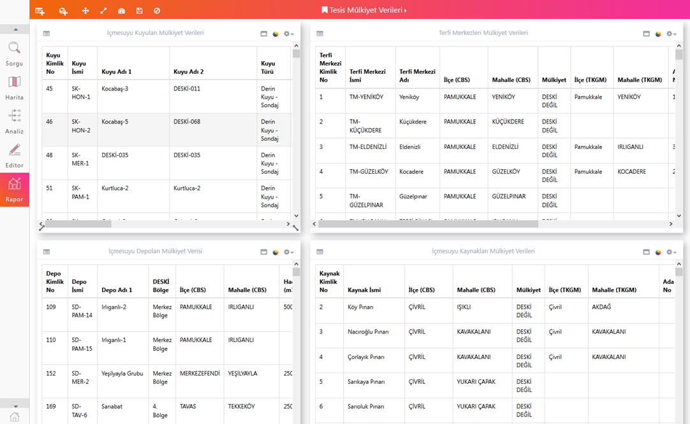

ODAGIS+ Web arayüzünde merkezi coğrafi bilgi sistemi ile bütünleşik çalışan, Yöneticiler tarafından oluşturulmuş ve diğer kullanıcılarla paylaşılabilen "Genel Rapor Şablonları" veya kullanıcılar tarafından kendi ihtiyaçlarına göre oluşturulan "Özel Rapor Şablonları" mevcuttur.
 Kullanımı :
Kullanımı :
1- Ekranın üst orta kısmında bulunan seçim kutusundan görüntülenecek Rapor adı seçilir.
2- Alt kısımda pencereler halinde seçilen Rapora ait grafik, tablo ve haritalar görüntülenir.

3- Herhangi bir penceredeki grafik, başlık çubuğunun sağ üst köşedesindeki ayar butonu vasıtasıyla farklı bir tipte grafiğe (çubuk, çizgi, elma, radar vb), tabloya veya tematik harita görünümüne çevrilebilir.

4- Benzer şekilde herbir grafik üzerinde pencere başlık çubuğunun solunda yer alan gizli menü ile farklı işlemler(kaydetme, min.max değer yazdırma, tip çevirme vb) yapılabilir.

5- Grafik gösterimlerde X ekseninde belirli aralık seçimleri yapılabilmektedir. Aralık ayarlamak için grafik gösterim alanı üzerinde fare tekerleği ile veya eksenin altındaki çubuk gösterimin uçlarından çekerek aralık değiştirtirilebilir.

6- Rapor pencerelerinde aşağıda gösterildiği şekilde özel tablosal gösterimler yapmak da mümkündür.
